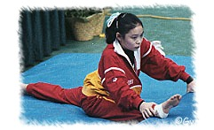

Chen Cuiting (CHN)
1986 and 1990 Asian Games AA Champion
 Medal Total World Championships:
1 Bronze |
Chen was born on July 15, 1971, in Changsha, Hunan Province. She began gymnastics at age 5, and was coached by Zhou Xiaolin. Her final competition was the 1990 Asian Games.
Competition Results
1985
International Jr. Championships: 2nd FX
Moscow News: 3rd FX
Riga International: 4th AA, 1st FX, 3rd B
1986
Asian Games: 1st Team, 1st AA, 1st FX, 2nd V
Goodwill Games: 6th AA, 6th B, 7th UB, 8th V
USA-CHN Dual Meet: 1st Team, 4th AA
1987
Chinese Sports Festival: 1st AA
Shenyang International: 1st AA
World Championships (Rotterdam): 4th Team, 11th AA, 6th FX
1989
China Cup: 4th AA, 2nd B, 3rd V
CHN Championships: 7th AA
French International: 4th AA, 1st FX
World Championships (Stuttgart): 3rd Team, 6th AA, 4th B,
5th FX
1990
American Cup: 9th AA (prelims)
Asian Games: 1st Team, 1st AA, 1st FX, 2nd V
China Cup: 2nd AA
Intl. Mixed Pairs: 2nd Team
This page was created on January 27, 2000 and was last updated on December 28,
2000.
© Gymn Forum